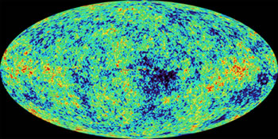

Credit: NASA/WMAP
The term ‘concordance model’ is used in cosmology to indicate the currently accepted and most commonly used cosmological model. It is important to identify a concordance model because the measurement of many astrophysical quantities (e.g. distance, radius, luminosity and surface brightness) depend upon the cosmological model used. Consequently, for ease of comparison if nothing else, the models assumed in different studies should at least be similar, if not identical.
Currently, the concordance model is the Lambda CDM model (which includes cold dark matter and a cosmological constant). In this model the Universe is 13.7 billion years old and made up of 4% baryonic matter, 23% dark matter and 73% dark energy. The Hubble constant for this model is 71 km/s/Mpc and the density of the Universe is very close to the critical value for re-collapse. These values were derived from WMAP (Wilkinson Microwave Anisotropy Probe) satellite observations of the cosmic microwave background radiation.